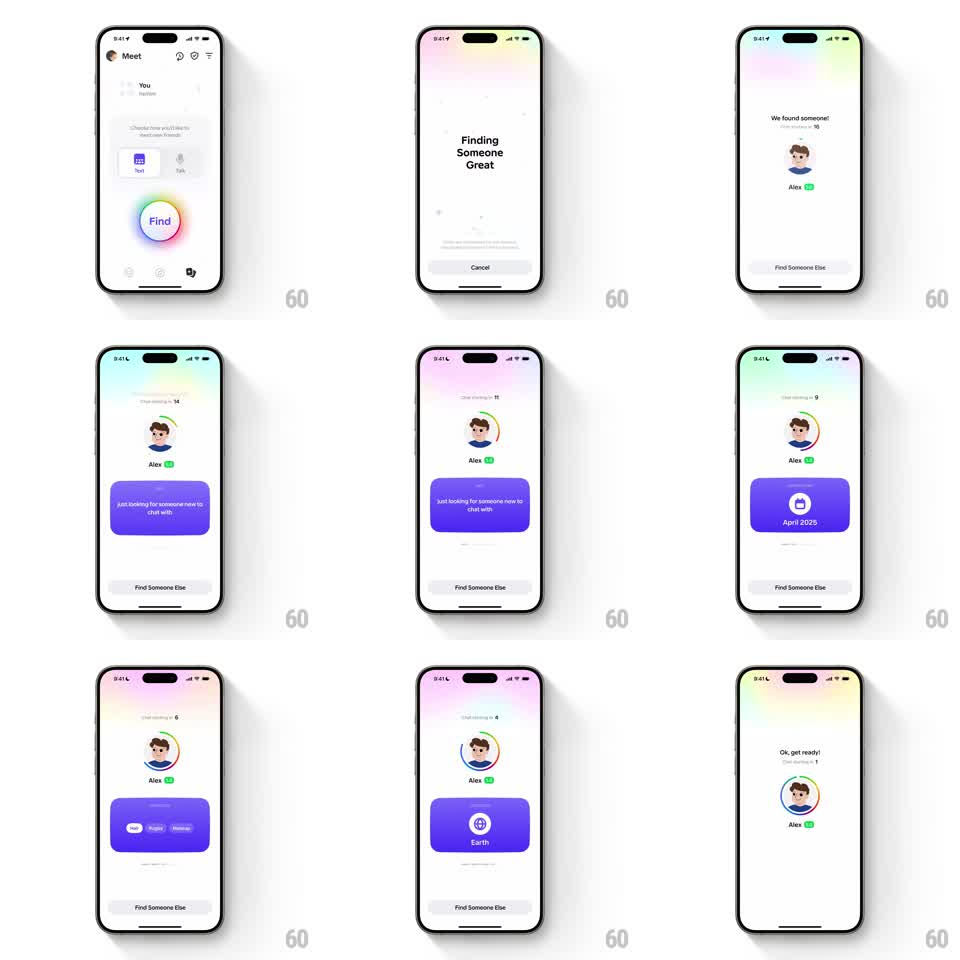

Media
Frame-by-frame

Rebuild this interaction 1:1: Honk's Find Someone match preview - after "Finding Someone Great", the match card appears with the avatar ringed by a colorful circular countdown, and a purple stats card auto-cycles through the person's facts while "Chat starting in N" ticks down to "Ok, get ready!".

Rebuild this interaction 1:1: Honk's Find Someone match preview - after "Finding Someone Great", the match card appears with the avatar ringed by a colorful circular countdown, and a purple stats card auto-cycles through the person's facts while "Chat starting in N" ticks down to "Ok, get ready!". ## Integration Integration: stack-agnostic spec - springs given as stiffness/damping, timed motions as duration + curve; map every value to your framework and animation library of choice. ## Scene Meet tab: rainbow-outlined "Find" button. Searching state: "Finding Someone Great" with Cancel. Match state: "We found someone!" header, "Chat starting in 14" countdown line, the avatar ringed by a rainbow gradient ring that depletes as the countdown ticks, "Alex" with a green badge, a purple info card center, and "Find Someone Else" at the bottom. Final beat: "Ok, get ready! Chat starting in 1". ## Motion spec Pattern: auto-cycling stat carousel with depleting countdown ring. - Find button: the rainbow ring around "Find" rotates continuously (2s/rev) while searching; "Finding Someone Great" fades in (250ms). - Match reveal: avatar pops (scale 0.6 -> 1.05 -> 1, spring ~340/15) with the rainbow ring drawing around it (stroke trim, 500ms); header and name fade in (250ms stagger). - Countdown: the ring depletes counterclockwise (trim proportional to remaining seconds, ~15s total), its gradient rotating slowly; the "Chat starting in N" number ticks each second with a small roll (100ms). - The purple stat card auto-advances every ~2.5s: current content slides up and out, next slides in from below (250ms, ease-in-out) - bio line, "April 2025" (calendar icon), "Earth" (globe icon), trait pills (Night owl...). Each swap comes with a subtle card pulse (scale 1 -> 1.02 -> 1). - At 1s: "Ok, get ready!" replaces the header (crossfade 200ms), the ring completes and flashes once (opacity pulse, 200ms). ## Calibration - The ring is a countdown first and decoration second - trim must track the actual seconds. - The stat carousel loops only if time remains; it pauses on the last swipe before chat starts. ## Reduced motion Static ring showing remaining fraction; stat card crossfades. ## Don't miss - The Find button's rainbow ring and the match ring share the same gradient language. - "Find Someone Else" stays available the whole countdown.